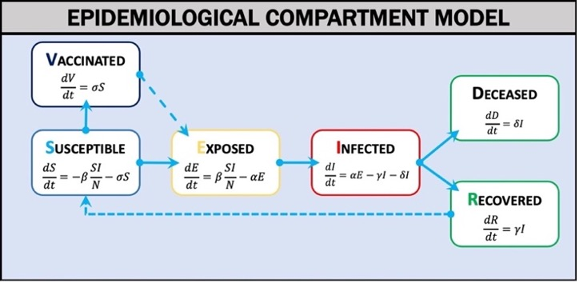

Disease Model
Compartment Model of Infectious Disease
Outbreak Simulator uses a compartment model of disease (Weissman et al., 2020) in which the population is divided into categories (Figure 1): Susceptible (S), Exposed (E), Infected (I), Vaccinated (V), Recovered (R), or Deceased (D). The model estimates the rates of exchange between categories over a given time interval (t) using differential equations. When the model parameters are known and key assumptions are met, the differential equations can estimate the epidemic curve of an outbreak. The two most critical assumptions are that the population is homogeneous and well mixed and is fixed in size. Deterministic and stochastic discrete time (Gillespie, 1976) versions of the models offer simpler but computationally performant (deterministic model) and mathematically rigorous but computationally slower (stochastic model) options to use in different educational contexts. We have pre-parameterized scenarios for influenza (multiple strains) and SARS-CoV-2 (multiple variants) and are creating more for additional diseases including Ebola, Measles, Mumps, Rubella, and the common cold. Outbreak Simulator can also be used to model fictional disease systems. For example, many science fiction and horror fiction treatments of zombies are based on fictional viruses (e.g. World War Z, Resident Evil, Walking Dead), and these scenarios could prove to be engaging learning environments for some users(E. T. Lofgren et al., 2016; Smith, 2009).

Compartments
Rate Parameters
Time Steps
User Parameterization
Outbreak Simulator parameterizes infectious disease dynamics with an interactive mental model. The beginning of each scenario provides grade appropriate information about the disease. The user is then guided through model parameterization using a drag and drop interface and plain language narrative-based scaffolding (Figure 3). Figure 3 shows a scenario in which the model parameters represent the 1918 influenza strain (Chowell et al., 2007). The interface allows the user to change model parameters using sliders or direct numerical input.